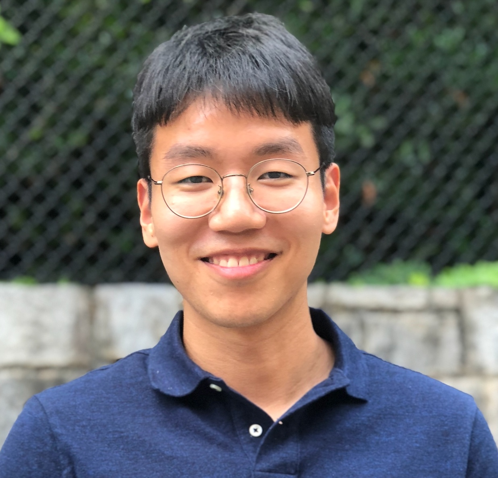

AI · Statistics · Machine Learning · Optimization
Heejune Sheen
Ph.D. Student in Statistics and Data Science
Yale University · Expected May 2027
Advisors:
Harrison H. Zhou, Henry Ford II Professor of Statistics and Data Science
Zhuoran Yang, Assistant Professor of Statistics and Data Science
Education:
M.S. in Statistics, Georgia Institute of Technology
B.S. in Mathematics and B.S. in Business and Technology Management, KAIST
My research lies at the intersection of machine learning, statistics, and optimization. I study how modern AI systems learn, represent information, reason, and improve through training and feedback.
Research
Foundations of Large Language Models
Training dynamics, in-context learning, and generalization in transformer models.
Interpretability of AI
Learned representations, feature recovery, and mechanisms underlying model decisions.
Synthetic Data & Post-Training
Verification, feedback, and adaptive data generation for improving pretrained models.